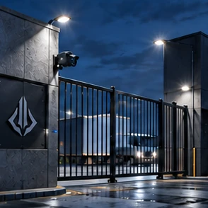
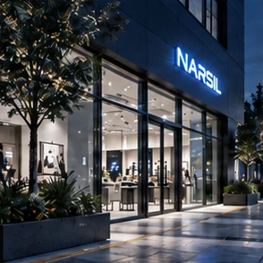
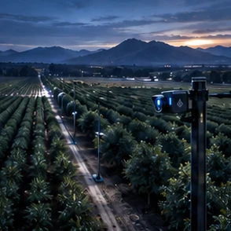
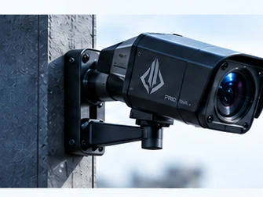
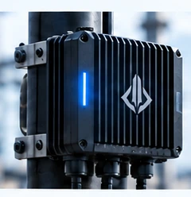
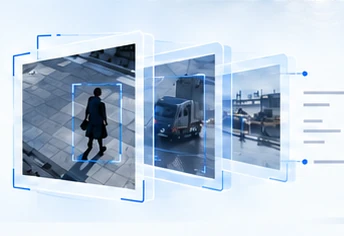
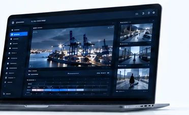

Convertimos las cámaras que ya tienes en inteligencia visual: eventos relevantes, métricas y contexto para tu operación.
01
Categoría
Inteligencia visual aplicada.
02
Para quién
Equipos de seguridad, operaciones y negocio.
03
Valor
Eventos y métricas para decidir con contexto.
El mundo físico ya está hablando.
Cada movimiento deja una señal. El valor está en entenderla.
Una entrada. Una pausa. Un cambio de ritmo.
Narsil Protocol transforma video en contexto para las personas que deciden.
Construimos inteligencia donde ocurre la realidad.
Puerto, zona 02. Una operación real vista por la plataforma: una región delimitada, un evento con lugar, tiempo y estado, y el contexto para priorizarlo.
Una plataforma. Distintas decisiones.
Un mismo motor. Cada equipo ve lo que necesita para decidir, con evidencia y contexto.
Quinta Avenida, de noche. 43 peatones identificados y 12 alertas en 24 segundos: personas cruzando fuera del paso de cebra, sobre calzada de tráfico. El sistema distingue peatón de vehículo — la misma zona está prohibida para uno y es camino normal para el otro.
Pasillo de centro comercial, grabado con nuestra propia cámara. 17 personas contadas y 11 detenidas frente al local en 18 segundos. Tu punto de venta sabe quién compró; esto muestra quién pasó por delante y no entró — el que pasa de largo no deja rastro en ninguna caja registradora.
Línea de empaque de fruta. 31 unidades contadas, alrededor de 150 por minuto, unidad por unidad en el momento en que pasan. Cero alertas, a propósito: una faja no tiene anomalías. El mismo motor, otra pregunta.
Un motor. Cinco contextos.
La misma plataforma se configura para cada escena: qué zonas importan, qué cuenta como evento y qué cifras se reportan.

Seguridad
Intrusión, merodeo y aglomeraciones.

Retail
Tránsito, detención y conversión de entrada.
Producción
Conteo de unidades y ritmo de línea.
Obras
Actividad y presencia por zona.

Agricultura
Monitoreo visual según cultivo y sensor.
Cada caso requiere configuración y validación en campo.
La inteligencia empieza en el sitio.
El video continuo se procesa localmente. A la nube suben eventos y métricas. Fotos y clips de evidencia según la configuración del despliegue.

01
Cámaras
Video de la operación.

02
Borde
Detección y seguimiento.

03
Eventos
Zonas, actividad y cifras.

04
Decisiones
Tableros, alertas y contexto.
En el sitio
Video continuo
Detección y seguimiento
Reglas por zona
Clips de evidencia
A la nube
Eventos
Métricas
Tableros y alertas
Fotos y clips, según configuración
Ficha
Lo que entra, lo que sale y dónde ocurre. Sin adjetivos.
Entrada
Video de cámaras existentes. Archivos y transmisiones de prueba hoy; cámaras IP por RTSP en camino.
Detección
Personas, vehículos y objetos, con identidad continua a lo largo del tiempo.
Reglas por zona
Intrusión en zona restringida, merodeo, cruce repetido y densidad de personas.
Salida
Eventos con evidencia, métricas por zona y por hora, alertas por correo, API y video en vivo.
Dónde corre
En el borde, cerca de la cámara. A la nube suben eventos y métricas, no la grabación continua.
Privacidad
Sin identificación facial. La plataforma trabaja con posiciones, trayectorias y zonas.
Rendimiento medido
54,7 fps · 5,5× tiempo real · 17,2 ms de detección y 0,66 ms de capas propias por cuadro. Clip de referencia de 795 cuadros en un MacBook M4, sin GPU dedicada.
Estado
Motor y tablero en operación de prueba. Cada despliegue se configura por escena y se valida en campo.
Lo que hace hoy. Lo que viene.
Distinguimos lo disponible de lo que está en camino. Cada capacidad se configura por escena y se valida en campo.
01
Detección y seguimiento
Personas, vehículos y objetos, con identidad continua a lo largo del tiempo.
02
Zonas y reglas
Intrusión en zona restringida, merodeo, cruce repetido y densidad de personas.
03
Conteo
Personas únicas por zona y embudo de entrada: pasan, se detienen, ingresan.
04
Ritmo de línea
Unidades por minuto y pausas, comparadas con el objetivo del turno.
05
Evidencia
Clip con segundos previos al evento y foto de referencia, por cada alerta.
06
Resumen automático
Descripción en lenguaje claro de lo que ocurrió, para revisar sin ver el video.
07
Alertas
Correo y tablero, con el contexto necesario para decidir.
08
API y video en vivo
Integración con los sistemas existentes y visualización en tiempo real.
En camino
Cámaras IP por RTSP
Aceleración en GPU y NPU
Cámaras con cómputo integrado
Plataformas aéreas para cultivos
Sistemas autónomos
Esta página describe capacidades disponibles y otras en desarrollo. Las cifras provienen de pruebas internas sobre un clip de referencia y no garantizan el rendimiento en cada despliegue. Lo que está en camino se anuncia como tal.
Capacidad de ver. Libertad para decidir.
Nuestra visión es construir en Latinoamérica tecnología propia para empresas, infraestructura crítica y, a futuro, defensa y seguridad nacional.
Percepción local
Detección y seguimiento en el borde, cerca de la cámara, sin depender de la nube para lo esencial.
Control de los datos
El video se queda en el sitio. A la nube suben eventos y métricas, no la grabación continua.
Capacidad regional
Ingeniería, soporte y despliegue desde Latinoamérica, para operaciones de la región.
El alcance sin conexión depende de cada despliegue.
La inteligencia también despega.
Nuestra visión: percepción a bordo de drones autónomos.
Inspección
Recorridos programados sobre infraestructura y cultivos.
Monitoreo
Cobertura de zonas amplias donde una cámara fija no alcanza.
Respuesta a eventos
Verificación visual de una alerta antes de decidir.
Concepto de producto · Visión futura. No representa un producto disponible.
Ver.Entender.Decidir.
Propósito
Hacer comprensible el mundo físico para mejorar las decisiones.
Misión
Convertir video en eventos, métricas y contexto cerca de donde ocurre la operación.
Visión
Construir capacidad tecnológica propia en Latinoamérica, desde cámaras hasta sistemas autónomos.
Exploremos un caso de uso en tu operación.
Sin compromiso. Un caso concreto, una escena, una cifra que hoy no tienes.